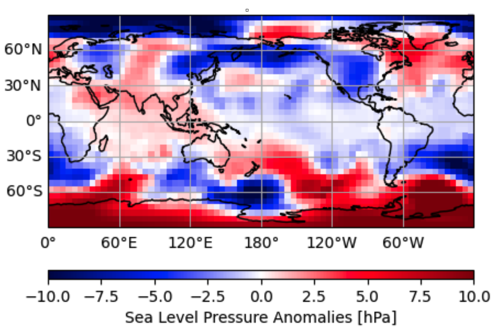
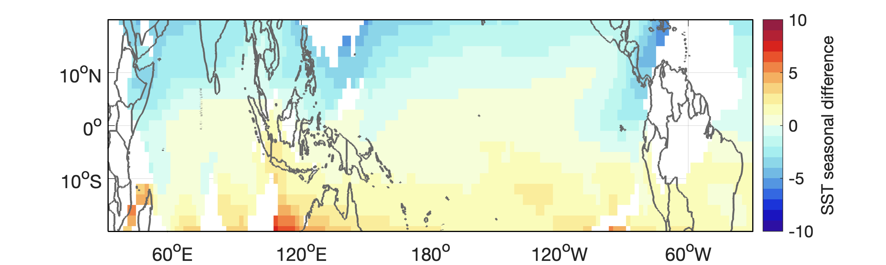

1D vector
shape: (5,)
A numpy.array is a grid of values that lets you store and do math on data quickly and efficiently.
You should always use .shape to check the dimension of an array.
Typical ways to organise data are:
shape: (5,)
shape: (5,6)
shape: (4,6,6)
shape: (2,3,6,6)
time
lat x lon
year x mon
time x lat x lon
year x mon x day
year x mon x lat x lon
Note: we will focus on analysing data blocks using NumPy. Other packages built on top of NumPy, such as xarray, also exist, but they hide much of the underlying logic and introduce additional syntax and data structures. We therefore recommend exploring those packages only after you are fully comfortable working with NumPy itself.
1. Calculate the mean value across a certain dimension, using either numpy.mean() or numpy.nanmean().
data_mean = np.mean(data, axis = x)
Always assign which axis to average over
Useful when the data contain missing values
Calculate annual from monthly values
Calculate mean over time
Calculate monthly from daily values
2. Reshape data into different dimensions, using numpy.reshape().
data_reshaped = np.reshape(data, new_shape)
In NumPy, the last axis changes fastest when you reshape.
year x mon
time
.reshape(2,3)
time
year x mon
.reshape(-1)
We call this vectorisation
year x mon x lat x lon
(2,3,6,6)
time x lat x lon
(6,6,6)
.reshape(2,3,6,6)
Later, you can calculate seasonal cycles over axis 0.
time x lat x lon
(6,6,6)
year x mon x lat x lon
(2,3,6,6)
.reshape(6,6,6)
3. Transpose a 2D matrix, using ndarray.transpose().
data_transposed = data.transpose()
For a 2D matrix, rows and columns are swapped
.transpose()
When we need to convert time x lat x lon into the shape of space x time for certain analysis
.reshape(3,4*2).transpose()
4. Index or slice across a dimension
data_subset = data[start : end : stride]
You need to specify which dimension to be indexed
data_subset = datamonthly data: time x lat x lon[0::12, :, :]
Returns data from all Januarys
Using a boolean array to index only at the location that is true.
A boolean array consists of true and false values.
bool = (some condition or judgment)
data_subset = data[bool]
A NetCDF file is a self-describing, portable format for storing and sharing multi-dimensional scientific data along with its metadata.
pip install netCDF4
from netCDF4 import Dataset
with Dataset("*.nc") as nc:
print(nc.variables.keys())
dict_keys(['lat', 'lon', 'time', 'slp'])
with Dataset("*.nc") as nc:
variable = nc.variables["varname"][:]
...
If the netCDF4 package is not installed,
install it in a new code cell.
After importing the toolbox,
open a NetCDF file and list all variables in the file.
Read variables as needed.
You can then use .shape to check their dimensions.
Removing the seasonal cycle means subtracting the regular, repeating annual pattern from the data to highlight anomalies or long-term changes.
The new series should be centred around zero!
data_anm = np.zeros(data.shape)
for ct in np.arange(12):
data_anm[ct::12] = data[ct::12] - np.nanmean(data[ct::12], axis=0)Allocate empty space for anomalies
Loop over month
Subset that month across all years
Calculate the mean across years
Remove the mean value from each year
Assign data to corresponding locations in the array for anomalies
A monthly time series can be reshaped into a year x month matrix, making the seasonal cycle visible as a two-dimensional pattern.
If data come as a 2D matrix with dimension: year x mon
If data come as a 1D vector with dimension: time
We can reshape data into 2D first,
and then apply the method above.
If data come as a 3D array with dimension: time x lat x lon
Option 1: keep it as 3D and loop over month, as in the previous slide.
Option 2: reshape the time axis into year x mon x lat x lon.
import cartopy.crs as ccrs
fig = plt.figure(figsize=(10, 5))
# Choose a projection, see this gallery for more examples.
ax = fig.add_subplot(1, 1, 1, projection=ccrs.PlateCarree())
# Always tell your plotting function which projection you choose,
# see this guide for how transform and projection works.
ax.set_extent([lon0, lon1, lat0, lat1], crs=ccrs.PlateCarree())
plot_name = ax.pcolormesh(..., transform=ccrs.PlateCarree(), ...)
cbar = plt.colorbar(plot_name, ...)
cbar.set_label('Variable [unit]') # Whenever available, include the UNIT!!!
# Add costlines and gridlines to make the map easier to read.
ax.coastlines()
ax.gridlines(draw_labels=True, dms=True, x_inline=False, y_inline=False)

(1) It seems that latitude is reversed in the plot such that July becomes cooler than January in the Northern Hemisphere. Also, there should not be values for SSTs over land.
(2) The colourbar label is missing the unit for SST seasonal difference.
Want to know more about Linear Algebra?
A matrix is simply a way to organise 2D data. We have already met this structure as a 2D numpy.array.
Matrix multiplication is a simplifying notation in many data analysis techniques,
including Regression & Principal Component Analysis, which will be covered in later lectures.
Dimension: (5x4)
Dimension: (5x3)
Dimension: (3x4)
Ai,j = Σk Bi,k x Ck,j
Hover over a cell in A
The number of columns in the first matrix must equal the number of rows in the second matrix: (m x n) = (m x k) x (k x n).